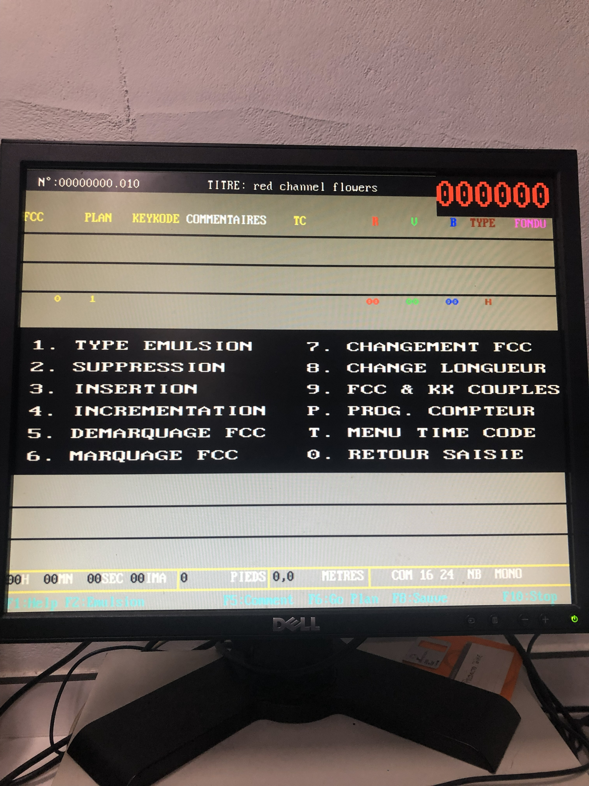
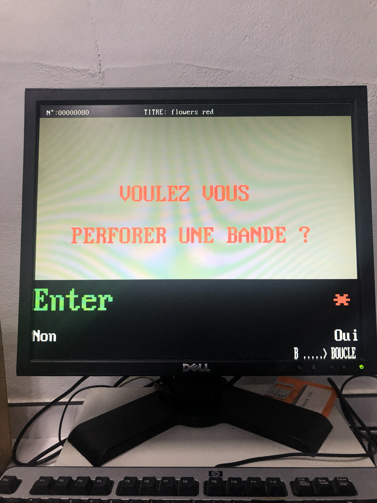
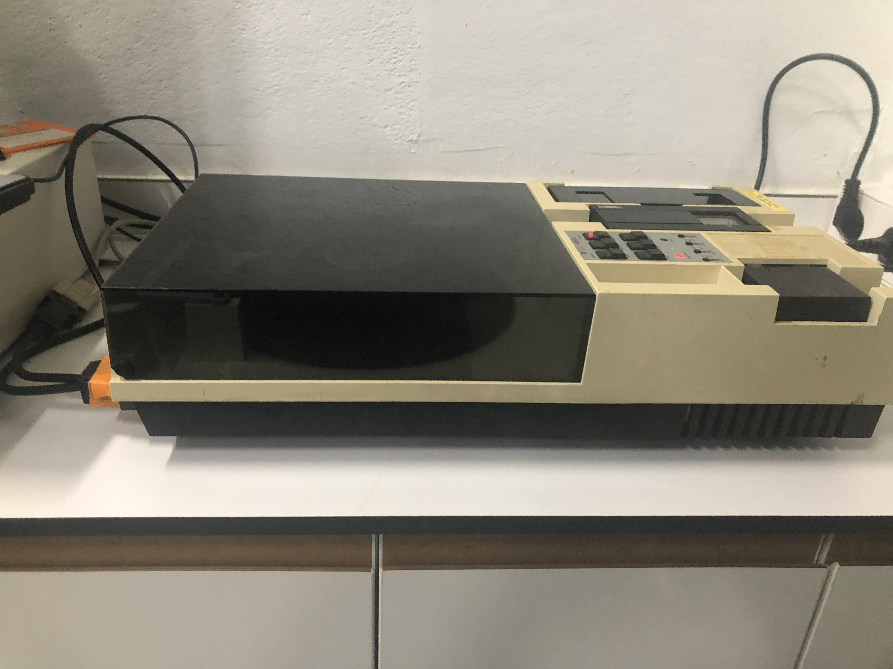
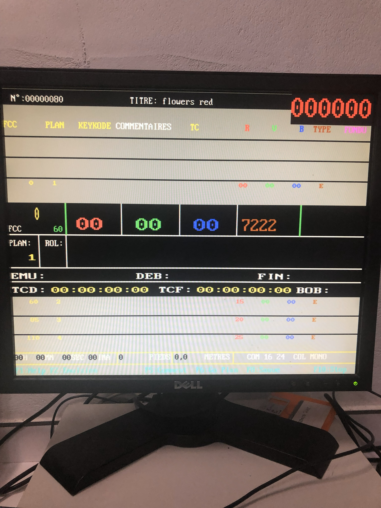
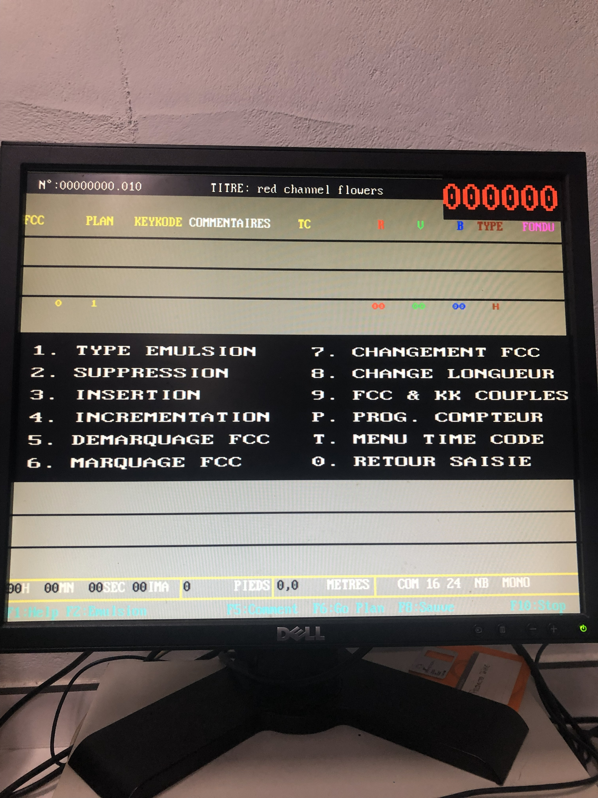
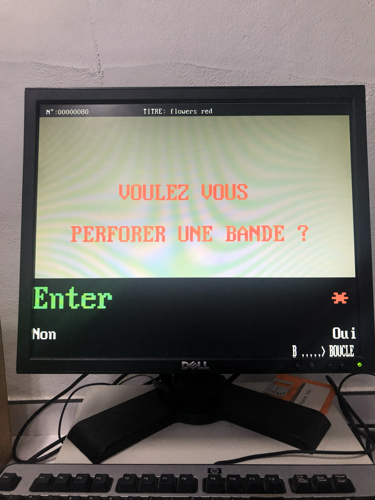
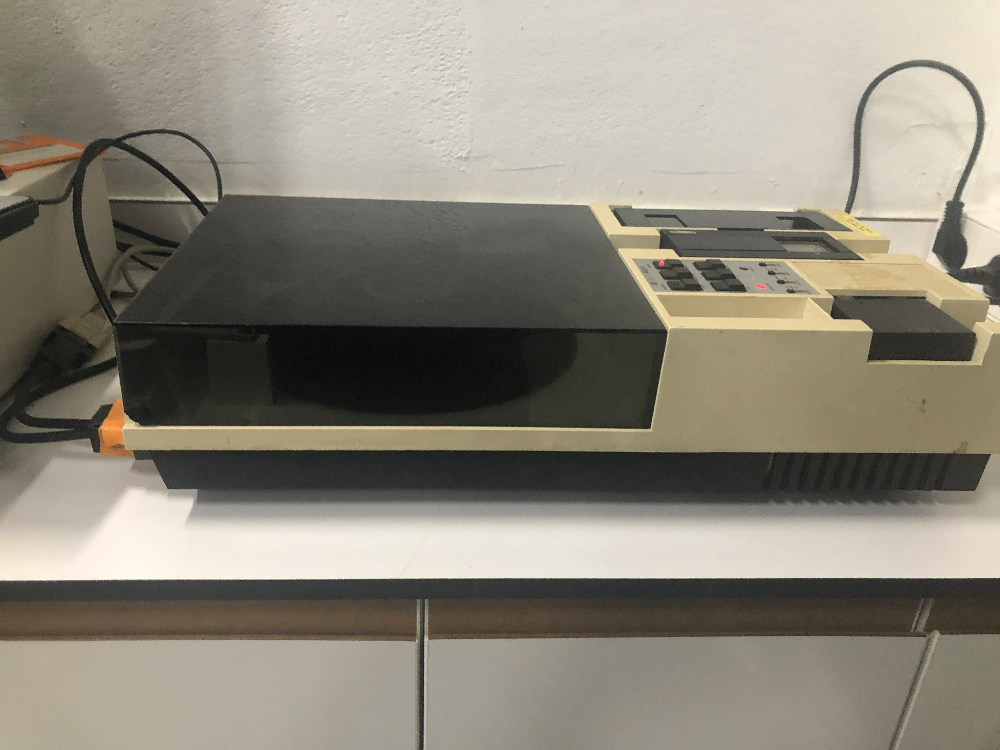
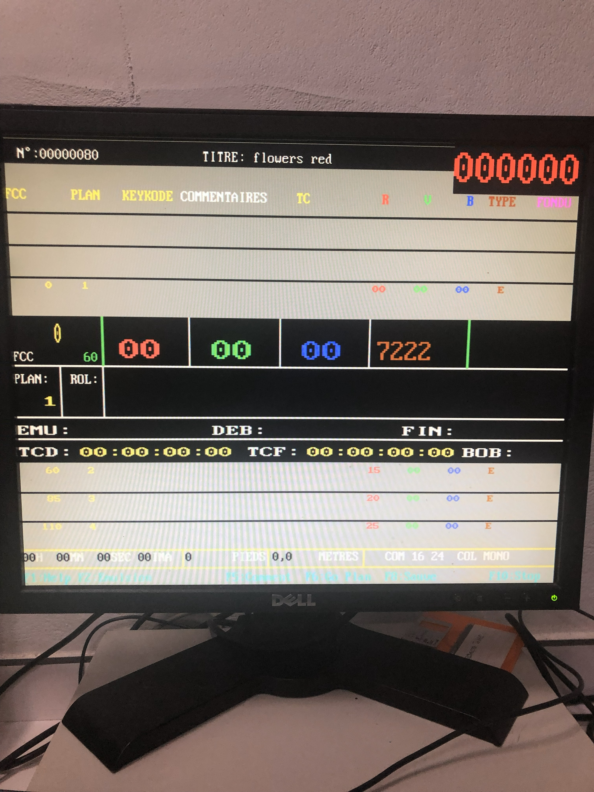

Étalonnage
Presentations
Cineteca de Madrid -Matadero-2024
Focus Short films dedicated to Cuban amateur cinema.
Statment
Color balance and tonal control of light,
By adjusting filtration, exposure, and contrast, to a deeper
understanding of color correction, chromatic relationships, and precise control over the final photographic image.
befour preting, analising color points equivelent to printing lights on film machinary.


Colormaster
Presentations
Cineteca de Madrid -Matadero-2024
Focus Short films dedicated to Cuban amateur cinema.
Statment
color balance and tonal control through analog filtration, enhancing
my understanding of light, contrast, and chromatic correction in photographic processes.

 







The Projection
Presentations
Cineteca de Madrid -Matadero-2024
Focus Short films dedicated to Cuban amateur cinema.
Statment
Through contact printing, I developed a direct and hands-on approach
to image reproduction, emphasizing precision, material awareness, and the relationship on duplication systems, between negative and final print.


Contact Printers
Presentations
Cineteca de Madrid -Matadero-2024
Focus Short films dedicated to Cuban amateur cinema.
Statment
the earliest experiments in moving images, when the act of recording
and projecting were inseparable. It celebrates the intimate relationship
between light, mechanics, and gesture, emphasizing the performative and material presence of the image.
By revisiting this duality, the work invites the viewer to experience cinema as a tangible,
temporal event, where the projectionist becomes both creator and mediator of light and memory.